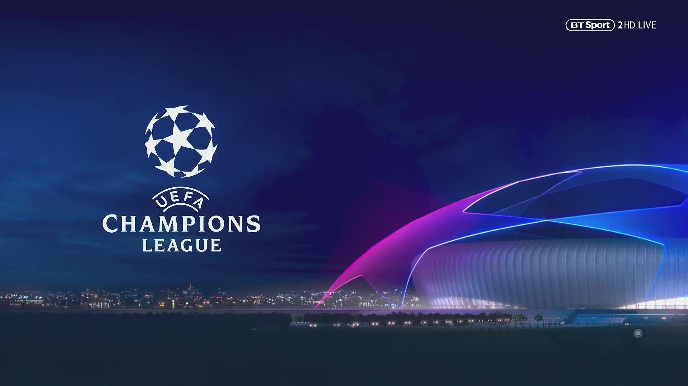

A UEFA Champions League é a principal competição de clubes de futebol da Europa e uma das mais prestigiadas do mundo. Organizada pela UEFA (União das Associações Europeias de Futebol), ela reúne anualmente os melhores times das principais ligas europeias, proporcionando confrontos históricos e momentos inesquecíveis para milhões de torcedores.
Criada em 1955 com o nome de Taça dos Clubes Campeões Europeus, a competição passou por diversas transformações ao longo dos anos. Em 1992, recebeu o nome atual de UEFA Champions League e adotou um formato mais moderno, incluindo fases de grupos antes das etapas eliminatórias. Desde então, tornou-se um dos eventos esportivos mais assistidos do planeta.
Clubes tradicionais como Real Madrid, Barcelona, Bayern de Munique, Liverpool, Milan e Manchester United construíram parte de sua história graças às grandes campanhas realizadas na Champions League. O Real Madrid é o clube com o maior número de títulos da competição, consolidando-se como uma das equipes mais vitoriosas da história do futebol.
A fase final do torneio costuma atrair enorme atenção da mídia internacional. A grande final é disputada em jogo único, em um estádio previamente escolhido pela UEFA. Esse evento reúne torcedores de diversas partes do mundo e apresenta uma cerimônia especial antes da partida, tornando-se um dos maiores espetáculos do esporte mundial.
Além da importância esportiva, a Champions League gera grande impacto econômico para clubes, patrocinadores e cidades-sede. A competição oferece premiações milionárias e aumenta a visibilidade global das equipes participantes, contribuindo para o crescimento do futebol em diferentes países.